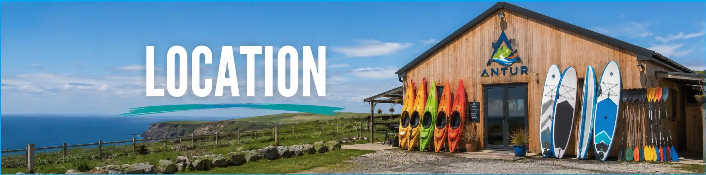
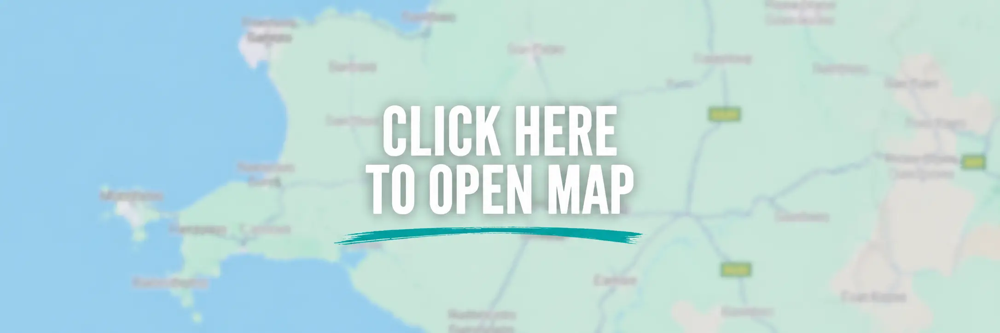
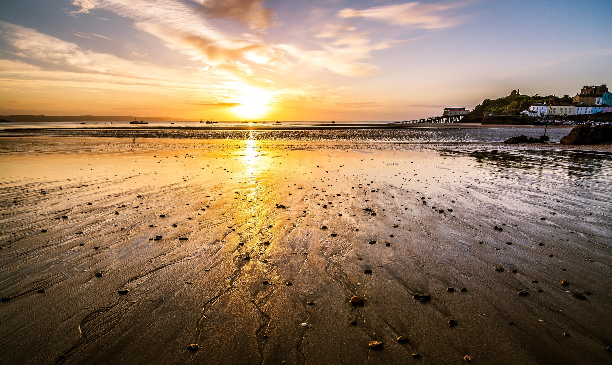
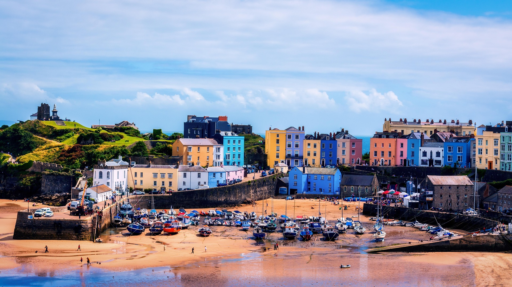

Located in the heart of the Pembrokeshire Coast National Park, our base is surrounded by dramatic cliffs, stunning beaches and crystal-clear waters, providing the perfect setting for coastal adventures. Nearby landmarks include St Davids, the Blue Lagoon and the famous Pembrokeshire Coast Path, all within easy reach. The area is accessible by car via the A40 and A487, with train connections available from Cardiff, Swansea and other major towns, making it a convenient destination for both local visitors and those travelling from further afield.

Located on the beautiful Pembrokeshire coastline, Tenby is one of Wales' most popular seaside destinations, known for its colourful harbour, golden sandy beaches and historic town walls. Visitors can explore nearby attractions such as Tenby Harbour, Castle Hill and Caldey Island, while enjoying stunning coastal views and a welcoming atmosphere. Easily accessible by car via the A478 and A477, Tenby also benefits from regular train services, making it a convenient and picturesque destination for a day trip or longer stay.
The weather along the Pembrokeshire coast can change quickly, so all activities are subject to weather and sea conditions to ensure the safety of our participants. Before every session, our experienced instructors carry out thorough checks of forecasts, tides and water conditions. Participants receive a full safety briefing and are provided with high-quality equipment, including wetsuits, buoyancy aids and helmets. Our qualified guides remain with groups throughout the activity, offering expert guidance and support to ensure a safe, enjoyable and memorable experience on the water.